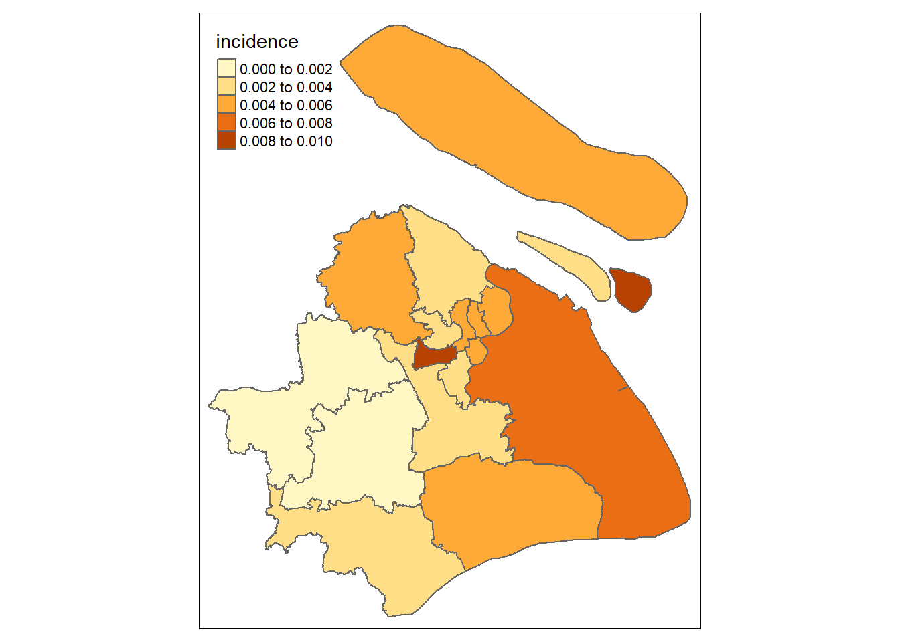

load('./data/df_combine.Rdata')
x <- df_combine %>%
filter(district != "") %>%
mutate(tb = fct_recode(tb, '1'= 'Yes', '0'='No')) %>%
mutate(tb=as.character(tb),
tb=as.numeric(tb))
levels(x$district) <- list("Huangpu" = 310101, "Xuhui" = 310104, "Changning" = c(310105, 310106), "Putuo" = 310107, "Zhabei" = 310108, "Hongkou" = 310109, "Yangpu" = 310110, "Minhang" = 310112, "Baoshan" = 310113, "Pudong" = c(310115, 310119), "Jiading" = 310114, "Jinshan" = 310116, "Songjiang" = 310117, "Qingpu" = 310118, "Fengxian" = 310120, "Chongming" = 310230)x = x %>%
group_by(district) %>%
summarise(tb_sum = sum(tb),
incidence = tb_sum/n()) %>%
ungroup()sh <- readOGR('./data/shanghai_shapefile/shang_dis_merged.shp',verbose = F)## Warning in readOGR("./data/shanghai_shapefile/shang_dis_merged.shp",
## verbose = F): Z-dimension discarded##Translating and Adding two missing two districts
sh@data <- sh@data %>%
mutate(Name = as.factor(Name)) %>%
mutate(Name = fct_recode(Name, Jiading = '嘉定区',
Fengxian = '奉贤区',
Baoshan = '宝山区',
Chongming = '崇明县',
Xuhui = '徐汇区',
Putuo ='普陀区',
Yangpu = '杨浦区',
Songjiang = '松江区',
Pudong='浦东新区',
Hongkou = '虹口区',
Jinshan = '金山区',
Changning = '长宁区',
Minhang = '闵行区',
Zhabei = '闸北区',
Qingpu = '青浦区',
Huangpu = '黄浦区'))## Warning: Unknown levels in `f`: <U+5609><U+5B9A><U+533A>, <U+5949><U
## +8D24><U+533A>, <U+5B9D><U+5C71><U+533A>, <U+5D07><U+660E><U+53BF>, <U
## +5F90><U+6C47><U+533A>, <U+666E><U+9640><U+533A>, <U+6768><U+6D66><U+533A>,
## <U+677E><U+6C5F><U+533A>, <U+6D66><U+4E1C><U+65B0><U+533A>, <U+8679><U
## +53E3><U+533A>, <U+91D1><U+5C71><U+533A>, <U+957F><U+5B81><U+533A>, <U
## +95F5><U+884C><U+533A>, <U+95F8><U+5317><U+533A>, <U+9752><U+6D66><U+533A>,
## <U+9EC4><U+6D66><U+533A>sh$incidence <- x$incidence
qtm(sh, fill = "incidence")